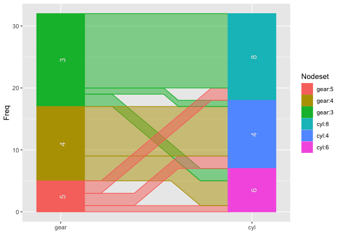

The R package ggparallel implements and combines different types of parallel coordinate plots for categorical data: hammock plots, parallel sets plots, and common angle plots, as well as common angle plots with a hammock-like adjustment for line widths.
Installation
The package is available on CRAN:
You can install the development version of ggparallel from GitHub with:
Basic use case
library(ggparallel)
#> Loading required package: ggplot2
data(mtcars)
ggparallel(list("gear", "cyl"), data=mtcars)
ggparallel(list("gear", "cyl"), data=mtcars, method="hammock", ratio=0.25)